2026-03-25
⚠️ DRAFT SLIDES — NEEDS EDITING
These slides were auto-generated from the extracted PDF and have not been reviewed or edited. Do not use as-is.
Hae Kyung Im, PhD
March 25, 2026
Today:
Sud et al 2017 NRC
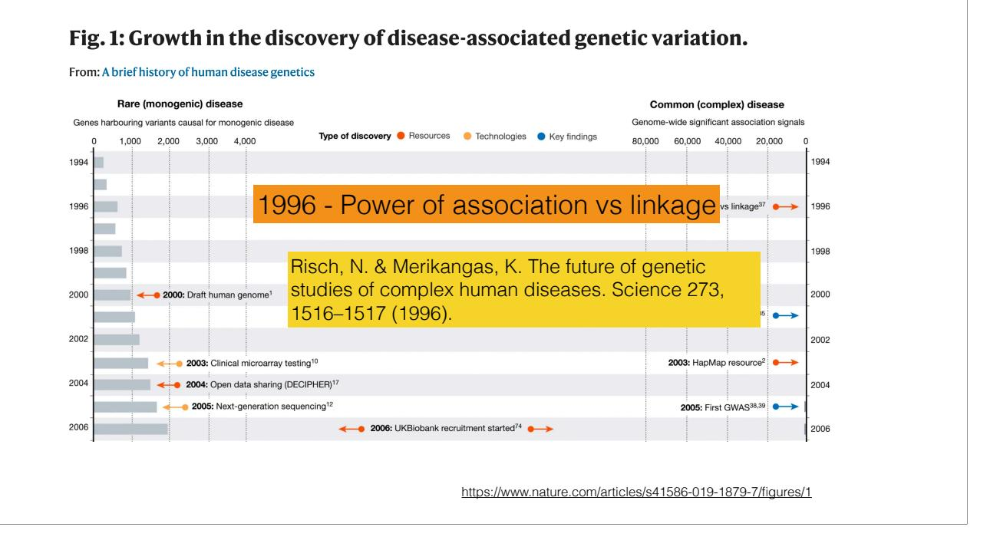
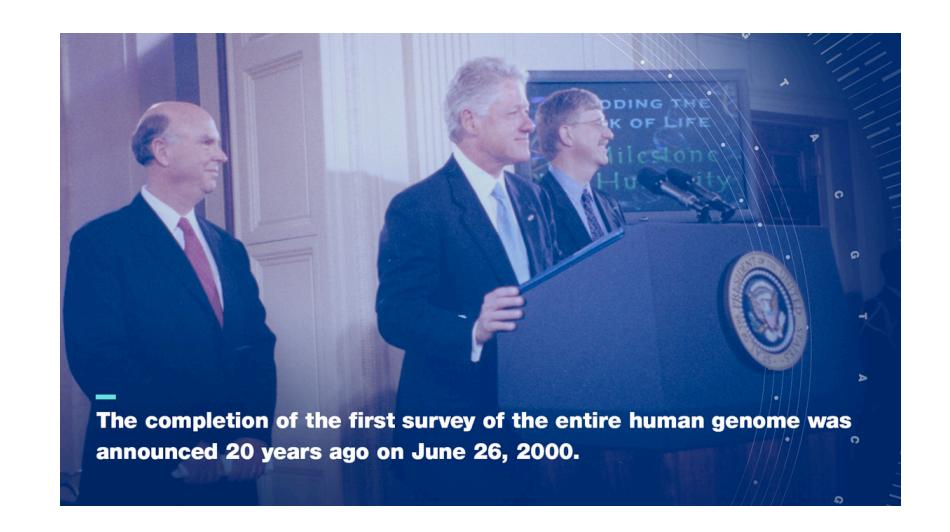
Linkage analysis
Association mapping
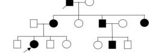
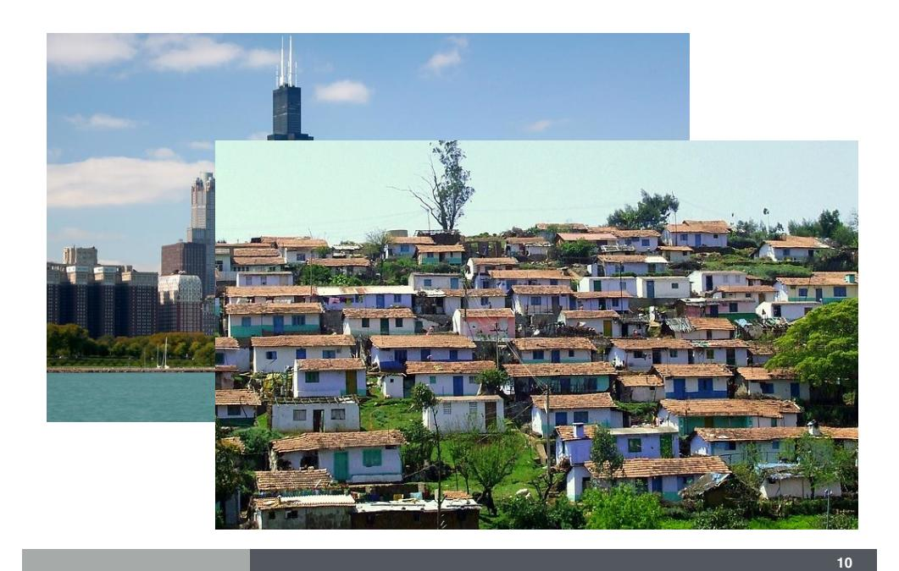
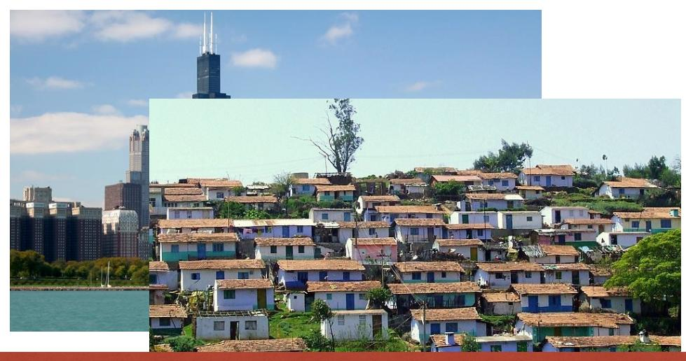
Genetic architecture of most cancer risk is highly polygenic
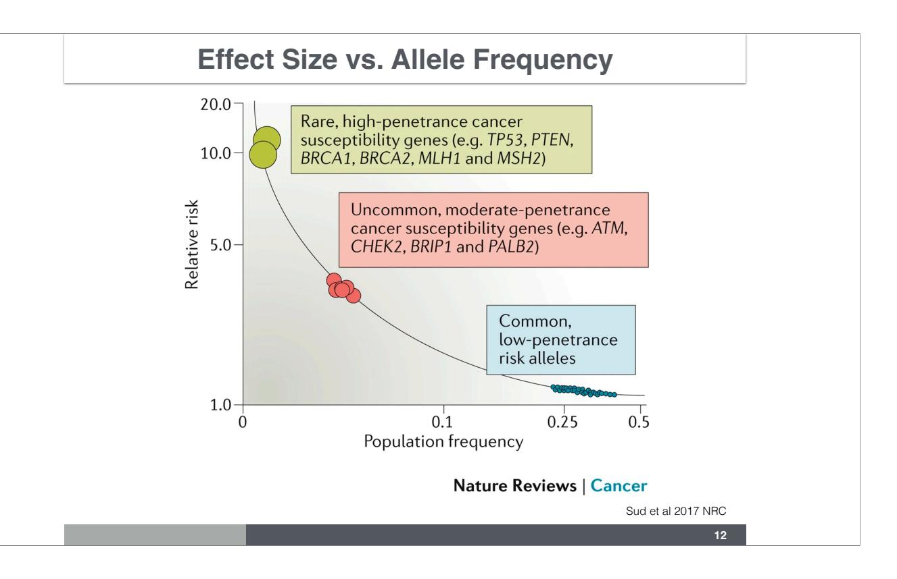
We reject H₀ if the observed test statistic is more extreme than what we would expect by chance
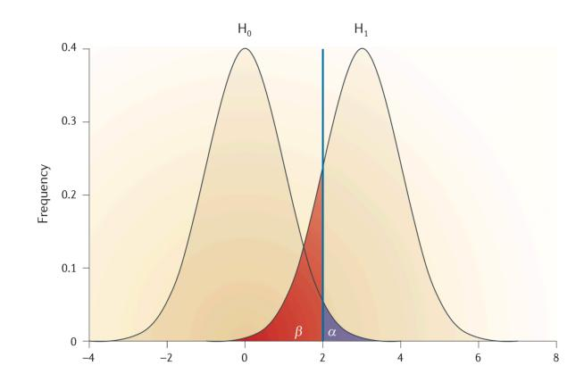
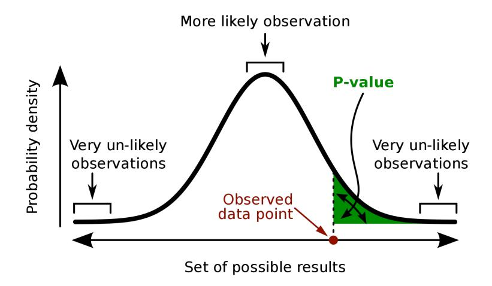
P-value = P(result as extreme or more extreme than observed | H₀ is true)
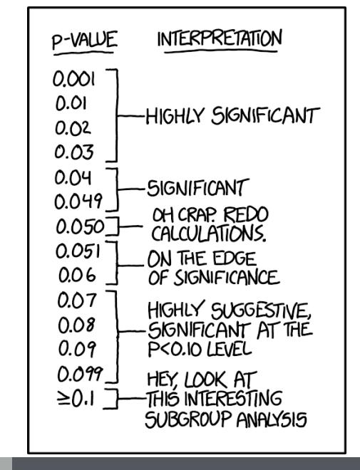
What’s alpha here?
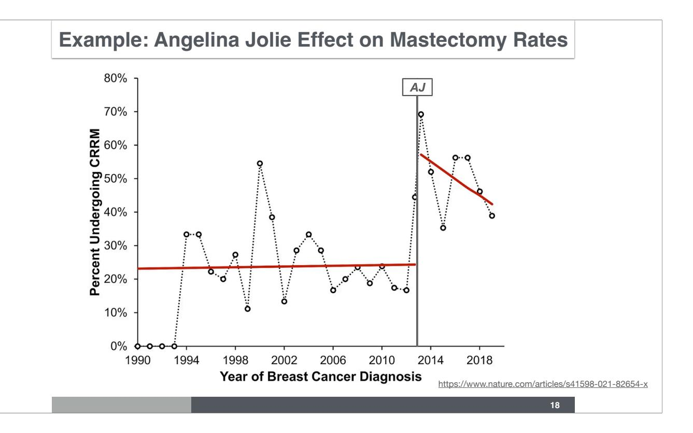
\[Y = \mu + a \cdot \text{age} + \beta \cdot X + \epsilon\]
Genotype: aa, aA, AA → X₁: dosage = number of A alleles
Quantitative trait (e.g., height, BMI, systolic blood pressure)
\[Y = \beta_0 + \beta_1 \cdot X_1 + \epsilon, \quad \epsilon \sim N(0, \sigma^2)\]
Linear Regression
Genotype: aa, aA, AA → X₁: dosage = number of A alleles
Binary trait (e.g., disease status, hypertension)
\[Y \sim \text{Bernoulli}(\pi)\]
\[\text{logit}(\pi) = \log\!\left(\frac{\pi}{1-\pi}\right) = \beta_0 + \beta_1 X_1\]
Logistic Regression — β₁ = log odds ratio
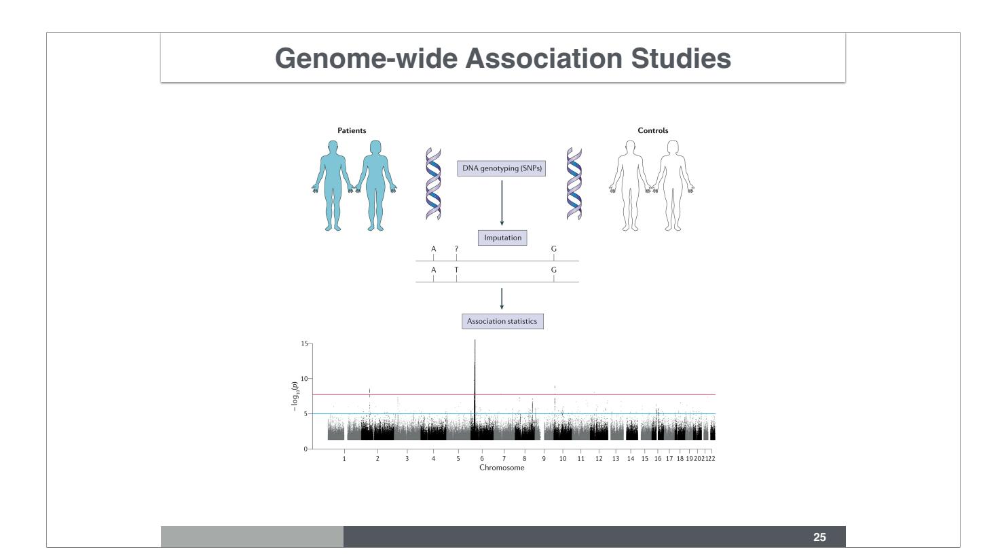
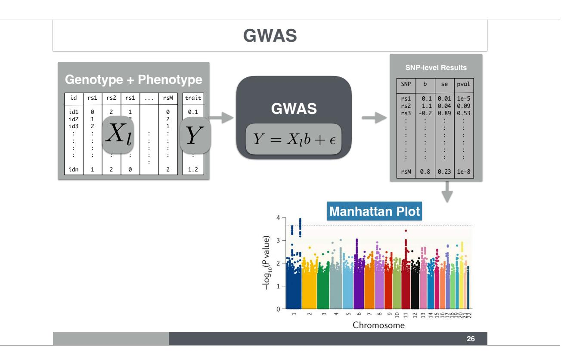
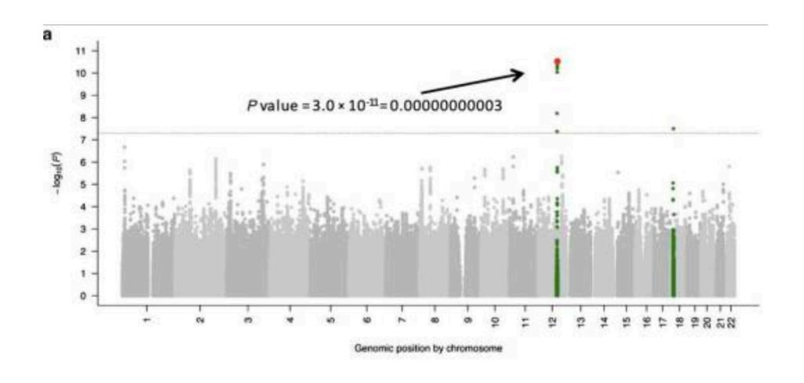
GWAS significance threshold: 5×10⁻⁸
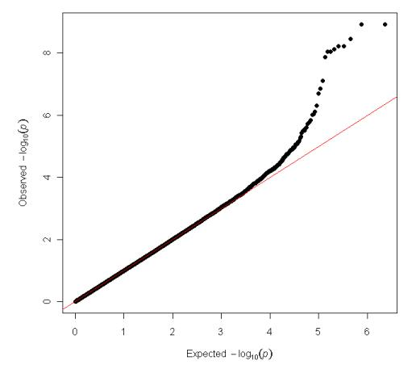
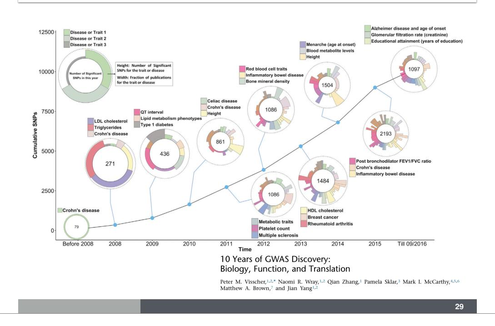
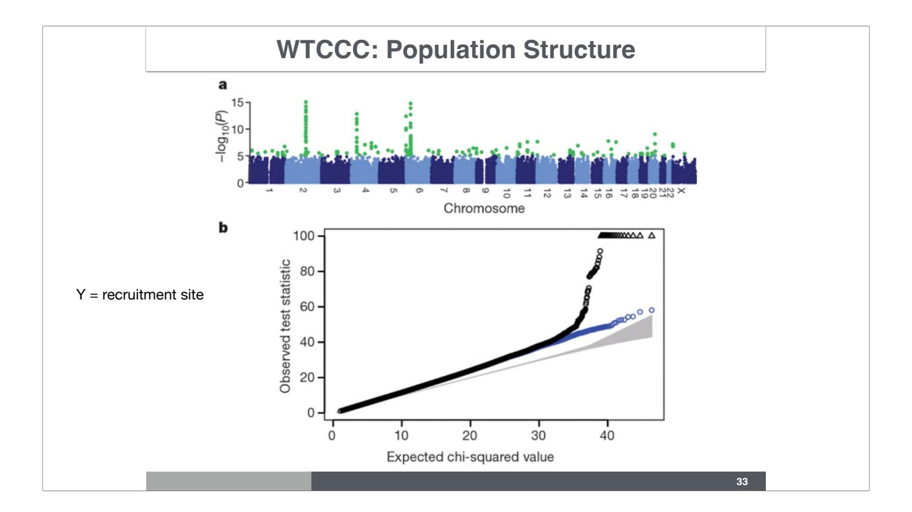
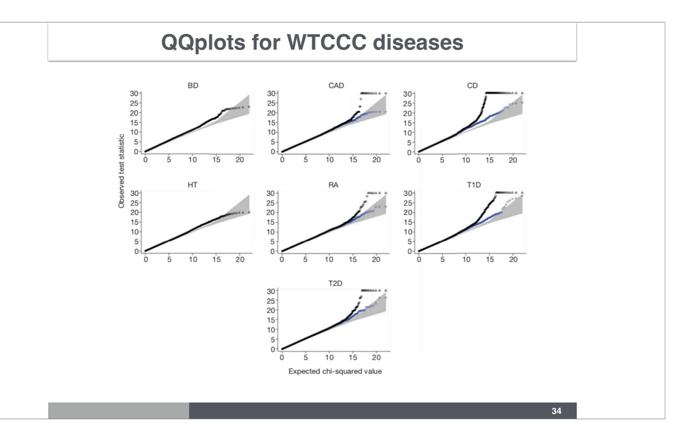
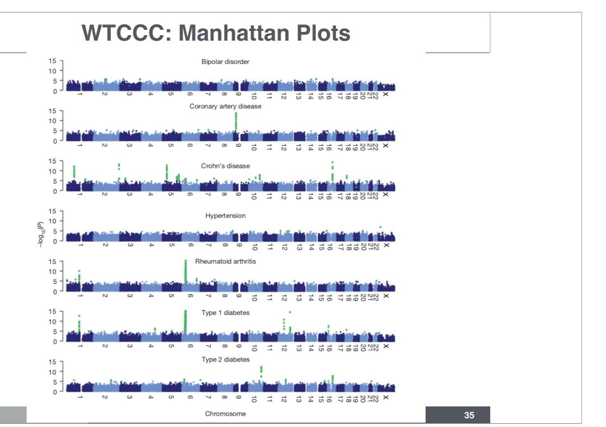
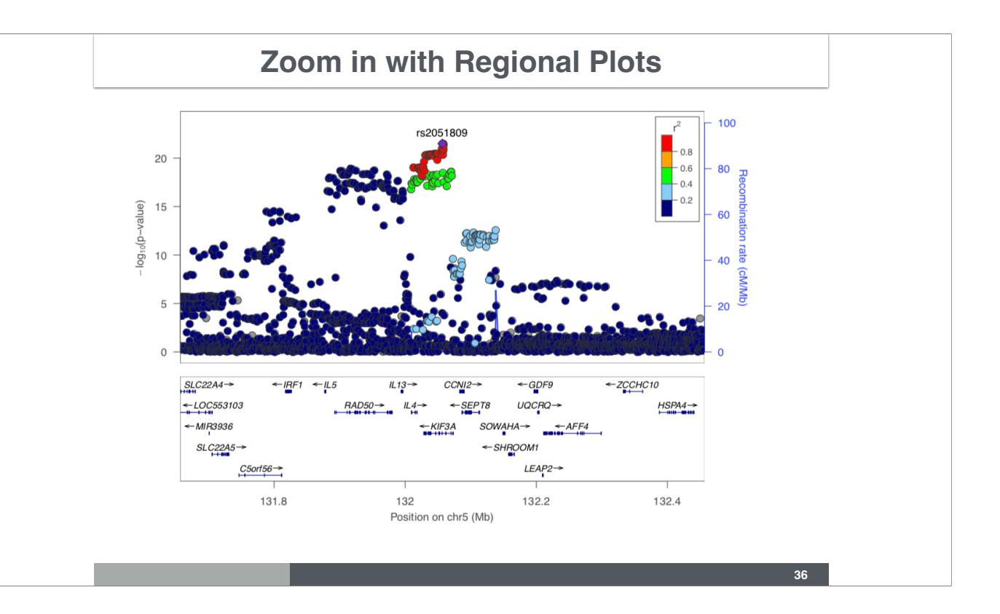
https://course-material.hakyimlab.org/post/bios-25328/2024-03-18-lab-01-command-line-r/
⚠️ DRAFT — NEEDS EDITING BEFORE USE